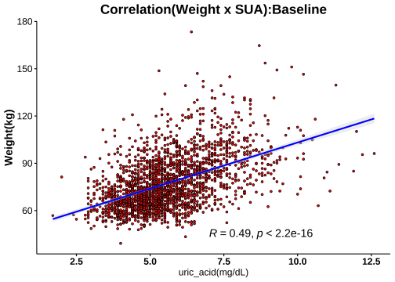
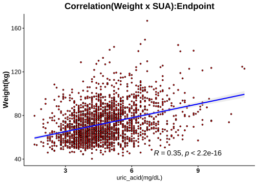
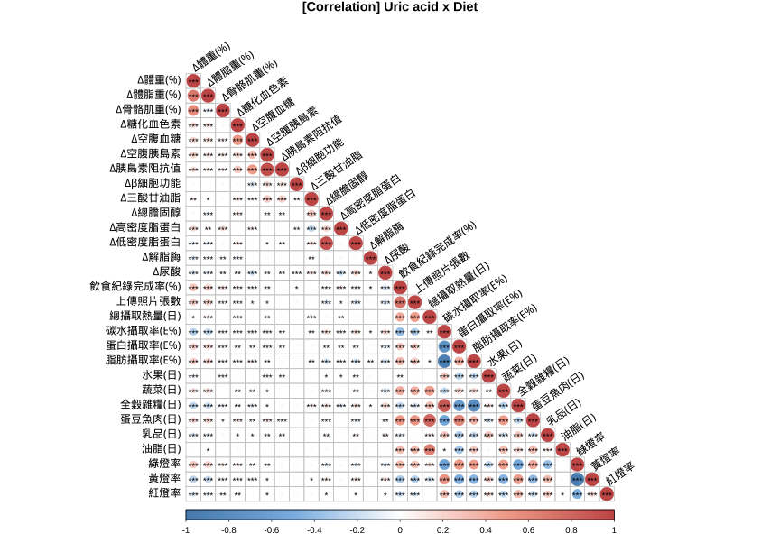

1.8 分層分析-3: 尿酸(Serum Uric Acid)
1.8.1 相關分析(Correlation Analysis)



1.8.2 Cutoff-1 (♂7.6/♀6.6)
| No change | Decrease | Increase | Normal>High | High>Normal | High>High | Sum | |
|---|---|---|---|---|---|---|---|
| female | 182 | 1073 | 226 | 50 | 168 | 46 | 1745 |
| male | 38 | 208 | 31 | 17 | 121 | 34 | 449 |
| Sum | 220 | 1281 | 257 | 67 | 289 | 80 | 2194 |
|
Cutoffs: Male: 7.6 (mg/dL) Female: 6.6(mg/dL) |


成效(Effectiveness)


成效(%)-Blood

| No change | Decrease | Increase | Normal>High | High>Normal | High>High | No change | Decrease | Increase | Normal>High | High>Normal | High>High | |
|---|---|---|---|---|---|---|---|---|---|---|---|---|
| 體重(T0) | 70.38 ± 0.98 | 71.76 ± 0.39 | 70.7 ± 0.9 | 75.26 ± 1.95 | 82.44 ± 1.16 | 87.18 ± 2.85 | 95.64 ± 3.44 | 92.81 ± 0.98 | 91.15 ± 2.75 | 98.41 ± 5.23 | 98.58 ± 1.46 | 101.9 ± 3.48 |
| BMI(T0) | 27.54 ± 0.36 | 27.76 ± 0.14 | 27.33 ± 0.32 | 28.92 ± 0.6 | 31.66 ± 0.43 | 33.62 ± 0.97 | 32 ± 1.15 | 30.8 ± 0.28 | 29.8 ± 0.8 | 32.38 ± 1.53 | 32.67 ± 0.41 | 33.47 ± 1.12 |
| 體脂重(T0) | 28.25 ± 0.66 | 28.64 ± 0.27 | 27.97 ± 0.63 | 32.31 ± 1.27 | 36.21 ± 0.83 | 40.01 ± 1.95 | 33.67 ± 2.43 | 30.63 ± 0.61 | 30.01 ± 1.94 | 34.42 ± 3.06 | 35.48 ± 1.04 | 36.93 ± 2.55 |
| 體脂率(T0) | 39.44 ± 0.43 | 39.17 ± 0.19 | 38.71 ± 0.42 | 42.31 ± 0.68 | 43.19 ± 0.44 | 44.96 ± 0.87 | 33.9 ± 1.17 | 32.51 ± 0.37 | 32.12 ± 1.26 | 34.14 ± 1.31 | 35.27 ± 0.58 | 35.11 ± 1.29 |
| 骨骼肌質量指數(T0) | 6.68 ± 0.06 | 6.81 ± 0.02 | 6.73 ± 0.05 | 6.83 ± 0.1 | 7.35 ± 0.07 | 7.53 ± 0.15 | 8.8 ± 0.15 | 8.78 ± 0.05 | 8.55 ± 0.14 | 8.95 ± 0.26 | 8.88 ± 0.06 | 9.04 ± 0.15 |
| 骨骼肌率(T0) | 32.89 ± 0.23 | 33.12 ± 0.1 | 33.25 ± 0.22 | 31.41 ± 0.36 | 31.17 ± 0.24 | 30.26 ± 0.47 | 37.23 ± 0.64 | 38.16 ± 0.21 | 38.2 ± 0.72 | 37.12 ± 0.69 | 36.64 ± 0.33 | 36.74 ± 0.72 |
| 內臟脂肪面積(T0) | 137.33 ± 3.32 | 141.18 ± 1.36 | 139.26 ± 3.12 | 158.44 ± 5.92 | 174.49 ± 3.37 | 193.27 ± 7.05 | 137.66 ± 8.09 | 135.84 ± 3.1 | 134.46 ± 9.32 | 131.52 ± 9.79 | 155.3 ± 4.72 | 152.8 ± 9.96 |
| 腰圍(T0) | 91.35 ± 0.8 | 92.15 ± 0.34 | 90.89 ± 0.77 | 96.07 ± 1.71 | 101.47 ± 0.88 | 105.06 ± 2 | 106.65 ± 2.75 | 104.67 ± 0.8 | 102.21 ± 2.42 | 108.91 ± 3.87 | 110.79 ± 1.27 | 112.08 ± 2.91 |
| 除脂體重(T0) | 42.13 ± 0.42 | 43.12 ± 0.16 | 42.73 ± 0.37 | 42.95 ± 0.81 | 46.22 ± 0.44 | 47.17 ± 1.05 | 61.97 ± 1.22 | 62.18 ± 0.52 | 61.14 ± 1.27 | 63.99 ± 2.5 | 63.1 ± 0.65 | 64.97 ± 1.33 |
| 基礎代謝率(T0) | 1280.09 ± 9.11 | 1301.46 ± 3.52 | 1293.03 ± 8.04 | 1297.78 ± 17.55 | 1368.4 ± 9.58 | 1388.87 ± 22.76 | 1708.76 ± 26.44 | 1713.22 ± 11.18 | 1690.42 ± 27.36 | 1752.35 ± 54.11 | 1732.88 ± 13.97 | 1773.44 ± 28.77 |
| 糖化血色素(T0) | 5.45 ± 0.02 | 5.48 ± 0.01 | 5.51 ± 0.05 | 5.48 ± 0.06 | 5.72 ± 0.05 | 5.77 ± 0.12 | 5.98 ± 0.18 | 5.59 ± 0.03 | 5.93 ± 0.17 | 5.76 ± 0.12 | 5.63 ± 0.04 | 5.89 ± 0.15 |
| 空腹血糖(T0) | 84.32 ± 0.64 | 85.39 ± 0.3 | 86.16 ± 1.21 | 85.86 ± 1.48 | 87.46 ± 1.04 | 89.09 ± 3.07 | 96.87 ± 6 | 88.53 ± 0.73 | 95.35 ± 5.19 | 89 ± 2.96 | 86.71 ± 1.08 | 91.85 ± 3.36 |
| 空腹胰島素(T0) | 11.49 ± 0.63 | 11.53 ± 0.24 | 10.75 ± 0.67 | 15.15 ± 1.47 | 17.56 ± 0.87 | 19.93 ± 2.47 | 15.59 ± 1.84 | 16.43 ± 0.87 | 18.5 ± 2.15 | 15.76 ± 3.12 | 17.88 ± 1.01 | 17.95 ± 1.69 |
| 胰島素阻抗值(T0) | 2.44 ± 0.15 | 2.53 ± 0.07 | 2.48 ± 0.26 | 3.25 ± 0.32 | 3.88 ± 0.21 | 4.51 ± 0.6 | 3.73 ± 0.45 | 3.67 ± 0.21 | 4.59 ± 0.74 | 3.72 ± 0.92 | 3.93 ± 0.25 | 4.22 ± 0.49 |
| β細胞功能(T0) | 203.51 ± 11.3 | 199.41 ± 7.17 | 174.97 ± 16.74 | 260.5 ± 26.21 | 314.12 ± 23.49 | 326.4 ± 38.91 | 222.97 ± 28.27 | 248.75 ± 13.87 | 257.95 ± 23.52 | 219.32 ± 31.04 | 315.26 ± 26.75 | 285.96 ± 28.35 |
| 三酸甘油脂(T0) | 103.16 ± 3.66 | 105.18 ± 1.66 | 96.05 ± 3.29 | 102.9 ± 6.71 | 142.92 ± 5.48 | 159.35 ± 22.09 | 132 ± 11.52 | 148.1 ± 6.03 | 148.45 ± 15.15 | 137.12 ± 15.01 | 172.92 ± 10.37 | 155.71 ± 14.76 |
| 總膽固醇(T0) | 197.77 ± 2.56 | 196.71 ± 1.15 | 197.62 ± 2.39 | 198.1 ± 6 | 203.82 ± 3.44 | 196.74 ± 5.02 | 182.71 ± 4.85 | 196.37 ± 2.51 | 183.68 ± 7.46 | 191.94 ± 9.42 | 202.76 ± 3.43 | 206.94 ± 8.65 |
| 高密度脂蛋白(T0) | 58.03 ± 0.99 | 57.33 ± 0.39 | 59.16 ± 0.91 | 53.99 ± 1.9 | 51.2 ± 0.85 | 48.77 ± 1.74 | 45.51 ± 1.44 | 46.47 ± 0.62 | 46.06 ± 1.56 | 44.55 ± 2.07 | 44.83 ± 0.96 | 44.32 ± 2.11 |
| 低密度脂蛋白(T0) | 122.18 ± 2.19 | 122.4 ± 0.97 | 120.69 ± 2.03 | 128.4 ± 5.24 | 131.42 ± 3.09 | 124.72 ± 4.7 | 120.55 ± 4.52 | 127.83 ± 2.06 | 118.42 ± 6.59 | 125.76 ± 7.94 | 134.34 ± 3.14 | 138.53 ± 7.52 |
| 尿酸(T0) | 4.73 ± 0.06 | 5.12 ± 0.02 | 4.33 ± 0.05 | 5.62 ± 0.1 | 7.33 ± 0.07 | 7.7 ± 0.14 | 5.88 ± 0.18 | 6.28 ± 0.06 | 5.41 ± 0.17 | 6.44 ± 0.26 | 8.47 ± 0.07 | 9.03 ± 0.21 |
| 澱粉脢(T0) | 44.06 ± 0.9 | 45.5 ± 0.45 | 48.44 ± 1.56 | 44.62 ± 2.05 | 41.73 ± 1.21 | 37.98 ± 1.49 | 40.37 ± 2.14 | 43.61 ± 1.14 | 45.45 ± 2.38 | 43 ± 3.16 | 39.31 ± 1.02 | 39.76 ± 2.14 |
| 解脂脢(T0) | 23.62 ± 0.79 | 24.27 ± 0.45 | 25.03 ± 1.19 | 23.52 ± 1.94 | 25.92 ± 1.35 | 26.04 ± 2.1 | 23.05 ± 1.74 | 26.24 ± 1.56 | 26.06 ± 2.73 | 21.59 ± 2.09 | 23.57 ± 1.1 | 25.74 ± 2.9 |
| 體重(T1) | 65.68 ± 0.94 | 67.43 ± 0.37 | 65.55 ± 0.84 | 68.83 ± 1.79 | 77.11 ± 1.11 | 81.03 ± 2.64 | 89.97 ± 3.34 | 86.42 ± 0.94 | 84.98 ± 2.57 | 89.14 ± 5.07 | 92.01 ± 1.37 | 94.39 ± 3.46 |
| BMI(T1) | 25.58 ± 0.34 | 26.08 ± 0.13 | 25.32 ± 0.3 | 26.45 ± 0.54 | 29.62 ± 0.41 | 31.25 ± 0.91 | 30.05 ± 1.12 | 28.67 ± 0.27 | 27.78 ± 0.76 | 29.32 ± 1.5 | 30.5 ± 0.38 | 31 ± 1.12 |
| 體脂重(T1) | 24.79 ± 0.64 | 25.67 ± 0.26 | 24.53 ± 0.58 | 28.02 ± 1.21 | 32.59 ± 0.81 | 36.02 ± 1.85 | 28.99 ± 2.35 | 26.2 ± 0.6 | 25.62 ± 1.84 | 27.64 ± 3.03 | 30.69 ± 0.99 | 31.01 ± 2.52 |
| 體脂率(T1) | 36.93 ± 0.46 | 37.25 ± 0.2 | 36.56 ± 0.44 | 40.01 ± 0.8 | 41.4 ± 0.49 | 43.4 ± 0.93 | 30.81 ± 1.27 | 29.72 ± 0.41 | 29.22 ± 1.37 | 29.78 ± 1.58 | 32.55 ± 0.61 | 31.45 ± 1.44 |
| 骨骼肌質量指數(T1) | 6.44 ± 0.06 | 6.58 ± 0.02 | 6.46 ± 0.05 | 6.46 ± 0.1 | 7.05 ± 0.06 | 7.19 ± 0.14 | 8.63 ± 0.16 | 8.49 ± 0.05 | 8.27 ± 0.11 | 8.6 ± 0.26 | 8.61 ± 0.06 | 8.81 ± 0.15 |
| 骨骼肌率(T1) | 34.12 ± 0.24 | 34.02 ± 0.11 | 34.24 ± 0.23 | 32.44 ± 0.42 | 32.02 ± 0.26 | 30.95 ± 0.49 | 38.9 ± 0.7 | 39.61 ± 0.24 | 39.72 ± 0.79 | 39.48 ± 0.83 | 38.1 ± 0.35 | 38.65 ± 0.8 |
| 內臟脂肪面積(T1) | 119.51 ± 3.29 | 125.7 ± 1.37 | 120.49 ± 2.98 | 137.7 ± 5.92 | 158.52 ± 3.55 | 169.69 ± 7.67 | 115 ± 7.54 | 114.45 ± 3.03 | 114.73 ± 8.61 | 108.17 ± 11.78 | 133.57 ± 4.66 | 122.11 ± 9.98 |
| 腰圍(T1) | 86.77 ± 0.82 | 87.82 ± 0.33 | 85.71 ± 0.71 | 89.95 ± 1.63 | 96.58 ± 0.9 | 99.56 ± 2 | 100.03 ± 2.61 | 98.13 ± 0.81 | 96.27 ± 2.53 | 100.13 ± 4.03 | 104.44 ± 1.28 | 104.25 ± 3.08 |
| 除脂體重(T1) | 40.89 ± 0.4 | 41.76 ± 0.16 | 41.03 ± 0.36 | 40.8 ± 0.75 | 44.52 ± 0.42 | 45.01 ± 0.95 | 60.98 ± 1.27 | 60.23 ± 0.5 | 59.35 ± 1.17 | 61.5 ± 2.28 | 61.32 ± 0.61 | 63.38 ± 1.34 |
| 基礎代謝率(T1) | 1253.32 ± 8.7 | 1272.11 ± 3.4 | 1256.14 ± 7.85 | 1251.22 ± 16.29 | 1331.56 ± 9.13 | 1342.33 ± 20.46 | 1687.13 ± 27.42 | 1670.85 ± 10.69 | 1652.06 ± 25.22 | 1698.41 ± 49.3 | 1694.5 ± 13.16 | 1738.88 ± 29.06 |
| 糖化血色素(T1) | 5.2 ± 0.02 | 5.23 ± 0.01 | 5.18 ± 0.03 | 5.15 ± 0.04 | 5.36 ± 0.03 | 5.4 ± 0.08 | 5.5 ± 0.12 | 5.28 ± 0.02 | 5.39 ± 0.1 | 5.34 ± 0.08 | 5.32 ± 0.03 | 5.4 ± 0.07 |
| 空腹血糖(T1) | 77.06 ± 0.68 | 78.57 ± 0.24 | 73.92 ± 0.77 | 69.46 ± 1.09 | 80.83 ± 0.75 | 77.48 ± 1.85 | 79.68 ± 1.79 | 79.35 ± 0.56 | 78.52 ± 2.17 | 70.41 ± 2.6 | 78.93 ± 0.74 | 78.26 ± 2 |
| 空腹胰島素(T1) | 8.93 ± 0.57 | 9.18 ± 0.2 | 7.66 ± 0.44 | 8.74 ± 0.91 | 13.66 ± 0.65 | 15.34 ± 1.92 | 10.54 ± 1.47 | 10.82 ± 0.49 | 13.36 ± 2.84 | 6.77 ± 1.75 | 14.33 ± 1.1 | 12.15 ± 1.51 |
| 胰島素阻抗值(T1) | 1.77 ± 0.12 | 1.83 ± 0.04 | 1.48 ± 0.1 | 1.56 ± 0.17 | 2.8 ± 0.14 | 3.1 ± 0.42 | 2.17 ± 0.34 | 2.16 ± 0.1 | 2.89 ± 0.77 | 1.28 ± 0.39 | 2.89 ± 0.26 | 2.46 ± 0.33 |
| β細胞功能(T1) | 308.19 ± 32.09 | 243.47 ± 8.62 | 248.43 ± 33.77 | 618.58 ± 159.96 | 358.47 ± 36.88 | 526.6 ± 124.19 | 289.76 ± 68.04 | 298.48 ± 29.78 | 307.17 ± 36.65 | 619.77 ± 272.67 | 368.25 ± 30.82 | 367.7 ± 46.87 |
| 三酸甘油脂(T1) | 93.95 ± 3.06 | 89.55 ± 1.31 | 93.58 ± 2.08 | 103.94 ± 4.19 | 114.25 ± 3.84 | 122.11 ± 7.16 | 113 ± 9.37 | 114.63 ± 4.09 | 131.74 ± 10.01 | 133.65 ± 14.87 | 141.05 ± 9.03 | 137.85 ± 10.35 |
| 總膽固醇(T1) | 206.41 ± 3.52 | 198.29 ± 1.33 | 208.56 ± 3.46 | 203.18 ± 7.48 | 194.67 ± 3.06 | 182.8 ± 5.76 | 186.71 ± 8.47 | 197.43 ± 3.15 | 195.42 ± 9.01 | 222.06 ± 15.48 | 192.88 ± 3.67 | 207.26 ± 8.95 |
| 高密度脂蛋白(T1) | 52.4 ± 0.92 | 52.9 ± 0.37 | 51.44 ± 0.8 | 43.23 ± 1.44 | 47.76 ± 0.74 | 41.79 ± 1.34 | 42.11 ± 1.57 | 44.37 ± 0.59 | 41.67 ± 1.76 | 40.69 ± 2.48 | 42.26 ± 0.9 | 40.29 ± 1.86 |
| 低密度脂蛋白(T1) | 133.17 ± 2.87 | 126.91 ± 1.1 | 134.7 ± 2.73 | 138.1 ± 6.39 | 125.93 ± 2.79 | 119.67 ± 5.08 | 125.92 ± 6.99 | 131.71 ± 2.62 | 129.84 ± 8.13 | 152.59 ± 11.89 | 129.14 ± 3.14 | 140.56 ± 7.24 |
| 尿酸(T1) | 4.71 ± 0.06 | 3.98 ± 0.02 | 5.14 ± 0.06 | 7.34 ± 0.09 | 5.02 ± 0.07 | 7.28 ± 0.11 | 5.82 ± 0.17 | 4.78 ± 0.06 | 6.35 ± 0.16 | 8.64 ± 0.22 | 5.88 ± 0.11 | 8.57 ± 0.14 |
| 澱粉脢(T1) | 47.12 ± 1.58 | 48.03 ± 0.5 | 47.24 ± 1.2 | 42.9 ± 2.02 | 45.39 ± 1.28 | 40.96 ± 1.58 | 43.39 ± 2.93 | 45.97 ± 1.17 | 48.52 ± 3.07 | 44.06 ± 4.31 | 41.87 ± 1.07 | 42.71 ± 2.54 |
| 解脂脢(T1) | 34.42 ± 1.27 | 36.03 ± 0.78 | 34.62 ± 1.21 | 36.78 ± 3.08 | 39.86 ± 2.08 | 39.24 ± 2.77 | 36.05 ± 7.02 | 37.73 ± 1.98 | 36.53 ± 3.44 | 31.24 ± 3.53 | 34 ± 1.55 | 37.74 ± 5.57 |
| 年齡 | 39.27 ± 0.82 | 39.46 ± 0.31 | 38.65 ± 0.58 | 37.76 ± 1.49 | 40.45 ± 0.97 | 37.89 ± 1.66 | 40.61 ± 1.89 | 39.32 ± 0.7 | 40 ± 1.87 | 38.12 ± 2.3 | 36.34 ± 0.9 | 35.76 ± 1.59 |
| 飲食紀錄完成率(%) | 68.55 ± 2.18 | 62.85 ± 0.87 | 75.45 ± 1.61 | 77.78 ± 3.08 | 63.06 ± 2.17 | 77.41 ± 3.65 | 68.67 ± 5.01 | 62.26 ± 2.01 | 64.72 ± 5.73 | 74.6 ± 6.89 | 60.46 ± 2.86 | 65.85 ± 4.75 |
| 紀錄數量 | 187.09 ± 10.08 | 158.43 ± 3.63 | 209.17 ± 10.24 | 218.24 ± 23.84 | 150.81 ± 8.64 | 198.07 ± 16.59 | 139.61 ± 15.49 | 158.64 ± 9.62 | 167.81 ± 29.64 | 169.59 ± 28.1 | 144.17 ± 12.78 | 181.5 ± 30.97 |
| 上傳照片張數 | 165.27 ± 8.25 | 140.8 ± 3.27 | 183.27 ± 7.31 | 169.4 ± 11.89 | 133.45 ± 7.48 | 178.22 ± 17.66 | 163.68 ± 22.07 | 141.32 ± 7.77 | 205.61 ± 29.35 | 215.71 ± 40.35 | 143.95 ± 11.25 | 168.59 ± 27.21 |
| 碳水攝取率(E%) | 18.69 ± 0.49 | 20.22 ± 0.19 | 17.01 ± 0.37 | 15.45 ± 0.65 | 19.32 ± 0.49 | 16.57 ± 0.87 | 17.98 ± 1.35 | 19.4 ± 0.47 | 18.13 ± 1.27 | 15.31 ± 1.29 | 19.6 ± 0.65 | 14.48 ± 0.73 |
| 蛋白攝取率(E%) | 27.72 ± 0.2 | 27.22 ± 0.08 | 28 ± 0.17 | 28.44 ± 0.33 | 27.45 ± 0.21 | 28.71 ± 0.43 | 28.13 ± 0.54 | 27.65 ± 0.2 | 27.86 ± 0.52 | 29.02 ± 0.43 | 27.46 ± 0.3 | 29.49 ± 0.6 |
| 脂肪攝取率(E%) | 53.59 ± 0.36 | 52.56 ± 0.14 | 55 ± 0.28 | 56.11 ± 0.55 | 53.23 ± 0.35 | 54.72 ± 0.67 | 53.88 ± 0.93 | 52.95 ± 0.35 | 54.01 ± 0.91 | 55.68 ± 1.2 | 52.94 ± 0.48 | 56.03 ± 0.62 |
| 總攝取熱量(日) | 1009.12 ± 13.73 | 1000.97 ± 4.9 | 1026.56 ± 10.8 | 997.26 ± 18.73 | 1014.97 ± 12.8 | 1030.91 ± 24.21 | 1155.4 ± 35.77 | 1145.78 ± 15.28 | 1133.98 ± 34.67 | 1223.38 ± 63.42 | 1130.52 ± 21.21 | 1229.47 ± 35.53 |
| 綠燈率 | 86.37 ± 0.95 | 81.87 ± 0.45 | 86.84 ± 0.87 | 90.76 ± 1.19 | 84 ± 1.03 | 87.94 ± 2.03 | 81 ± 3.23 | 83.61 ± 0.98 | 86.33 ± 2.34 | 92.17 ± 1.58 | 81.64 ± 1.58 | 88.73 ± 1.84 |
| 黃燈率 | 11.8 ± 0.83 | 15.62 ± 0.4 | 11.65 ± 0.78 | 7.7 ± 0.95 | 13.27 ± 0.87 | 10.5 ± 1.79 | 16.56 ± 2.75 | 14.75 ± 0.9 | 12.73 ± 2.18 | 7.61 ± 1.58 | 15.39 ± 1.36 | 10.18 ± 1.7 |
| 紅燈率 | 1.83 ± 0.3 | 2.51 ± 0.15 | 1.51 ± 0.2 | 1.54 ± 0.46 | 2.73 ± 0.5 | 1.56 ± 0.47 | 2.43 ± 0.83 | 1.64 ± 0.25 | 0.94 ± 0.29 | 0.22 ± 0.2 | 2.96 ± 0.52 | 1.08 ± 0.38 |
| 水果(日) | 0.07 ± 0.01 | 0.08 ± 0 | 0.06 ± 0.01 | 0.05 ± 0.01 | 0.08 ± 0.01 | 0.05 ± 0.02 | 0.03 ± 0.01 | 0.05 ± 0 | 0.07 ± 0.04 | 0.07 ± 0.04 | 0.07 ± 0.01 | 0.03 ± 0.01 |
| 蔬菜(日) | 3.43 ± 0.08 | 3.23 ± 0.03 | 3.64 ± 0.07 | 3.74 ± 0.14 | 3.33 ± 0.09 | 3.66 ± 0.17 | 3.43 ± 0.18 | 3.32 ± 0.08 | 3.66 ± 0.24 | 4.35 ± 0.43 | 3.28 ± 0.11 | 4.01 ± 0.24 |
| 全穀雜糧(日) | 1.87 ± 0.08 | 2.16 ± 0.04 | 1.57 ± 0.06 | 1.24 ± 0.1 | 2.03 ± 0.09 | 1.52 ± 0.15 | 2.15 ± 0.22 | 2.54 ± 0.1 | 2.08 ± 0.24 | 1.6 ± 0.28 | 2.46 ± 0.14 | 1.58 ± 0.19 |
| 蛋豆魚肉(日) | 8.9 ± 0.14 | 8.56 ± 0.05 | 9.26 ± 0.13 | 9.18 ± 0.2 | 8.82 ± 0.14 | 9.57 ± 0.3 | 10.54 ± 0.49 | 10.04 ± 0.16 | 10.17 ± 0.47 | 11.55 ± 0.64 | 9.88 ± 0.25 | 11.92 ± 0.52 |
| 乳品(日) | 0.05 ± 0.01 | 0.07 ± 0 | 0.05 ± 0.01 | 0.04 ± 0.01 | 0.06 ± 0.01 | 0.05 ± 0.02 | 0.05 ± 0.02 | 0.05 ± 0 | 0.04 ± 0.01 | 0.03 ± 0.01 | 0.06 ± 0.01 | 0.04 ± 0.01 |
| 油脂(日) | 3.86 ± 0.08 | 3.83 ± 0.03 | 4.02 ± 0.06 | 3.84 ± 0.12 | 3.86 ± 0.07 | 3.91 ± 0.16 | 4.33 ± 0.18 | 4.21 ± 0.08 | 4.15 ± 0.18 | 4.55 ± 0.31 | 4.12 ± 0.11 | 4.16 ± 0.22 |
| ∆體重 | 4.69 ± 0.16 | 4.33 ± 0.07 | 5.15 ± 0.17 | 6.43 ± 0.35 | 5.33 ± 0.19 | 6.15 ± 0.39 | 5.68 ± 0.53 | 6.39 ± 0.19 | 6.17 ± 0.64 | 9.28 ± 0.8 | 6.57 ± 0.28 | 7.51 ± 0.65 |
| ∆BMI | 1.96 ± 0.13 | 1.67 ± 0.03 | 2 ± 0.07 | 2.47 ± 0.14 | 2.04 ± 0.07 | 2.36 ± 0.14 | 1.95 ± 0.16 | 2.13 ± 0.06 | 2.02 ± 0.21 | 3.06 ± 0.26 | 2.17 ± 0.09 | 2.47 ± 0.21 |
| ∆體脂重 | 3.46 ± 0.13 | 2.97 ± 0.05 | 3.44 ± 0.14 | 4.29 ± 0.24 | 3.62 ± 0.14 | 3.99 ± 0.26 | 4.68 ± 0.33 | 4.43 ± 0.15 | 4.39 ± 0.41 | 6.78 ± 0.68 | 4.79 ± 0.23 | 5.92 ± 0.52 |
| ∆體脂率 | 2.51 ± 0.16 | 1.92 ± 0.05 | 2.15 ± 0.13 | 2.3 ± 0.26 | 1.78 ± 0.13 | 1.56 ± 0.21 | 3.09 ± 0.3 | 2.79 ± 0.14 | 2.9 ± 0.31 | 4.35 ± 0.56 | 2.72 ± 0.17 | 3.66 ± 0.38 |
| ∆骨骼肌質量指數 | 0.24 ± 0.02 | 0.23 ± 0.01 | 0.27 ± 0.02 | 0.37 ± 0.04 | 0.3 ± 0.02 | 0.34 ± 0.04 | 0.17 ± 0.05 | 0.29 ± 0.02 | 0.28 ± 0.05 | 0.35 ± 0.06 | 0.27 ± 0.02 | 0.23 ± 0.05 |
| ∆骨骼肌重 | 0.76 ± 0.07 | 0.83 ± 0.02 | 1.04 ± 0.06 | 1.32 ± 0.14 | 1.03 ± 0.07 | 1.31 ± 0.13 | 0.62 ± 0.25 | 1.21 ± 0.08 | 1.1 ± 0.2 | 1.51 ± 0.28 | 1.08 ± 0.1 | 1.04 ± 0.18 |
| ∆內臟脂肪面積 | 17.69 ± 0.77 | 15.43 ± 0.3 | 18.04 ± 0.69 | 20.29 ± 1.54 | 16.09 ± 0.81 | 17.47 ± 1.59 | 22.85 ± 1.83 | 21.03 ± 0.81 | 19.62 ± 1.87 | 32.32 ± 2 | 22.79 ± 1.11 | 27.37 ± 2.67 |
| ∆腰圍 | 4.58 ± 0.21 | 4.33 ± 0.09 | 5.19 ± 0.19 | 6.12 ± 0.56 | 4.89 ± 0.24 | 5.5 ± 0.48 | 6.62 ± 0.58 | 6.54 ± 0.23 | 5.94 ± 0.67 | 8.78 ± 1.09 | 6.35 ± 0.32 | 7.83 ± 0.78 |
| ∆除脂體重 | 1.23 ± 0.12 | 1.36 ± 0.04 | 1.71 ± 0.1 | 2.14 ± 0.24 | 1.71 ± 0.12 | 2.16 ± 0.22 | 0.99 ± 0.42 | 1.96 ± 0.13 | 1.78 ± 0.34 | 2.49 ± 0.47 | 1.78 ± 0.17 | 1.59 ± 0.31 |
| ∆基礎代謝率 | -26.77 ± 2.6 | -29.35 ± 0.94 | -36.89 ± 2.12 | -46.56 ± 5.11 | -36.85 ± 2.54 | -46.54 ± 4.76 | -21.63 ± 9.1 | -42.37 ± 2.87 | -38.35 ± 7.32 | -53.94 ± 10.04 | -38.37 ± 3.65 | -34.56 ± 6.67 |
| ∆糖化血色素 | 0.25 ± 0.02 | 0.25 ± 0.01 | 0.33 ± 0.03 | 0.33 ± 0.04 | 0.36 ± 0.02 | 0.38 ± 0.06 | 0.48 ± 0.08 | 0.31 ± 0.02 | 0.54 ± 0.09 | 0.42 ± 0.1 | 0.31 ± 0.02 | 0.49 ± 0.12 |
| ∆空腹血糖 | 7.26 ± 0.68 | 6.82 ± 0.3 | 12.25 ± 1 | 16.4 ± 1.75 | 6.62 ± 0.96 | 11.61 ± 2.21 | 17.18 ± 5.58 | 9.18 ± 0.73 | 16.84 ± 4.95 | 18.59 ± 2.94 | 7.79 ± 0.94 | 13.59 ± 2.94 |
| ∆空腹胰島素 | 2.55 ± 0.48 | 2.35 ± 0.22 | 3.09 ± 0.47 | 6.51 ± 1.23 | 3.9 ± 0.74 | 4.59 ± 2.52 | 5.05 ± 1.26 | 5.61 ± 0.78 | 4.68 ± 2.71 | 8.99 ± 2.04 | 3.64 ± 0.9 | 5.8 ± 1.63 |
| ∆胰島素阻抗值 | 0.67 ± 0.11 | 0.7 ± 0.06 | 1.01 ± 0.2 | 1.71 ± 0.27 | 1.08 ± 0.19 | 1.41 ± 0.62 | 1.56 ± 0.31 | 1.52 ± 0.2 | 1.7 ± 0.9 | 2.44 ± 0.68 | 1.05 ± 0.21 | 1.76 ± 0.44 |
| ∆β細胞功能 | -104.5 ± 31.48 | -45.39 ± 10.38 | -70.88 ± 36.87 | -355.67 ± 153.94 | -47.21 ± 32.83 | -200.19 ± 125.32 | -62.67 ± 56.56 | -55.03 ± 28.61 | -49.23 ± 37.27 | -393.59 ± 274.04 | -52.59 ± 31.04 | -77.55 ± 42.18 |
| ∆三酸甘油脂 | 9.21 ± 3.35 | 15.63 ± 1.43 | 2.46 ± 2.72 | -1.04 ± 6.55 | 28.67 ± 4.69 | 37.24 ± 20.69 | 19 ± 8.73 | 33.46 ± 4.71 | 16.71 ± 13.83 | 3.47 ± 14.91 | 31.87 ± 8.63 | 17.85 ± 11.66 |
| ∆總膽固醇 | -8.64 ± 2.38 | -1.58 ± 0.99 | -10.94 ± 3.02 | -5.08 ± 4.19 | 9.15 ± 2.54 | 13.93 ± 4.13 | -4 ± 6.46 | -1.06 ± 2.23 | -11.74 ± 6.62 | -30.12 ± 12.83 | 9.88 ± 3.1 | -0.32 ± 7.68 |
| ∆高密度脂蛋白 | 5.63 ± 0.63 | 4.43 ± 0.25 | 7.72 ± 0.57 | 10.76 ± 1.26 | 3.44 ± 0.6 | 6.98 ± 1.12 | 3.41 ± 1.2 | 2.1 ± 0.46 | 4.4 ± 1.69 | 3.85 ± 2.11 | 2.57 ± 0.62 | 4.04 ± 1.37 |
| ∆低密度脂蛋白 | -10.99 ± 1.96 | -4.51 ± 0.85 | -14.01 ± 2.43 | -9.7 ± 3.89 | 5.49 ± 2.23 | 5.04 ± 3.37 | -5.37 ± 5.15 | -3.88 ± 1.91 | -11.42 ± 5.93 | -26.82 ± 11.09 | 5.2 ± 2.73 | -2.03 ± 6.49 |
| ∆尿酸 | -0.02 ± 0.01 | -1.14 ± 0.02 | 0.81 ± 0.03 | 1.72 ± 0.14 | -2.32 ± 0.1 | -0.42 ± 0.18 | -0.06 ± 0.02 | -1.5 ± 0.05 | 0.95 ± 0.1 | 2.2 ± 0.4 | -2.59 ± 0.13 | -0.46 ± 0.27 |
| ∆澱粉脢 | 3.06 ± 1.32 | 2.52 ± 0.34 | -1.2 ± 0.93 | -1.72 ± 1.16 | 3.67 ± 0.85 | 2.98 ± 1.2 | 3.03 ± 2.51 | 2.37 ± 0.86 | 3.06 ± 2.18 | 1.06 ± 2.28 | 2.56 ± 0.74 | 2.94 ± 1.35 |
| ∆解脂脢 | 10.81 ± 1.05 | 11.81 ± 0.65 | 9.69 ± 1.3 | 13.26 ± 2.77 | 14.24 ± 1.85 | 13.2 ± 2.31 | 13 ± 6.98 | 11.58 ± 1.97 | 9.87 ± 4.35 | 9.65 ± 3.44 | 10.14 ± 1.22 | 12 ± 4.72 |
| ∆體重(%) | 6.69 ± 0.22 | 6.03 ± 0.09 | 7.22 ± 0.22 | 8.49 ± 0.4 | 6.5 ± 0.22 | 7.06 ± 0.35 | 5.95 ± 0.57 | 6.9 ± 0.19 | 6.69 ± 0.7 | 9.63 ± 0.7 | 6.64 ± 0.25 | 7.54 ± 0.65 |
| ∆BMI(%) | 6.98 ± 0.33 | 6.02 ± 0.09 | 7.25 ± 0.22 | 8.47 ± 0.4 | 6.49 ± 0.22 | 7.06 ± 0.35 | 6.14 ± 0.5 | 6.9 ± 0.2 | 6.7 ± 0.7 | 9.63 ± 0.71 | 6.61 ± 0.25 | 7.56 ± 0.65 |
| ∆體脂重(%) | 12.77 ± 0.48 | 10.75 ± 0.19 | 12.31 ± 0.5 | 13.66 ± 0.76 | 10.48 ± 0.43 | 10.37 ± 0.68 | 15.14 ± 1.27 | 15.13 ± 0.55 | 15.67 ± 1.5 | 21.67 ± 2.08 | 14.02 ± 0.65 | 17.79 ± 1.62 |
| ∆體脂率(%) | 6.54 ± 0.4 | 5.08 ± 0.15 | 5.56 ± 0.4 | 5.65 ± 0.68 | 4.31 ± 0.34 | 3.6 ± 0.52 | 9.79 ± 1.14 | 8.94 ± 0.48 | 9.77 ± 1.16 | 13.39 ± 1.84 | 8 ± 0.55 | 11.25 ± 1.28 |
| ∆骨骼肌質量指數(%) | 3.56 ± 0.25 | 3.4 ± 0.09 | 3.96 ± 0.22 | 5.3 ± 0.5 | 3.98 ± 0.25 | 4.45 ± 0.48 | 1.99 ± 0.56 | 3.25 ± 0.19 | 3.09 ± 0.57 | 3.94 ± 0.67 | 3.06 ± 0.22 | 2.55 ± 0.51 |
| ∆骨骼肌重(%) | 3.17 ± 0.32 | 3.48 ± 0.1 | 4.46 ± 0.23 | 5.54 ± 0.56 | 4 ± 0.26 | 4.95 ± 0.42 | 1.76 ± 0.7 | 3.39 ± 0.21 | 3.05 ± 0.6 | 3.98 ± 0.74 | 2.93 ± 0.27 | 2.87 ± 0.5 |
| ∆內臟脂肪面積(%) | 13.94 ± 0.66 | 11.81 ± 0.25 | 13.68 ± 0.57 | 13.47 ± 1.09 | 10.04 ± 0.55 | 10.09 ± 1.07 | 17.51 ± 1.51 | 16.41 ± 0.64 | 15.85 ± 1.58 | 25.77 ± 1.74 | 15.51 ± 0.75 | 19.85 ± 1.86 |
| ∆腰圍(%) | 5.05 ± 0.23 | 4.66 ± 0.09 | 5.62 ± 0.2 | 6.3 ± 0.55 | 4.86 ± 0.23 | 5.27 ± 0.46 | 6.16 ± 0.54 | 6.28 ± 0.22 | 5.91 ± 0.65 | 8.21 ± 0.92 | 5.77 ± 0.29 | 7.18 ± 0.72 |
| ∆除脂體重(%) | 2.8 ± 0.31 | 3.1 ± 0.1 | 3.96 ± 0.22 | 4.89 ± 0.53 | 3.63 ± 0.25 | 4.47 ± 0.4 | 1.59 ± 0.67 | 3.1 ± 0.2 | 2.78 ± 0.57 | 3.73 ± 0.69 | 2.74 ± 0.26 | 2.45 ± 0.48 |
| ∆基礎代謝率(%) | -2.03 ± 0.21 | -2.22 ± 0.07 | -2.83 ± 0.16 | -3.52 ± 0.38 | -2.65 ± 0.18 | -3.27 ± 0.3 | -1.25 ± 0.53 | -2.43 ± 0.16 | -2.19 ± 0.44 | -2.96 ± 0.55 | -2.16 ± 0.2 | -1.95 ± 0.38 |
| ∆糖化血色素(%) | 4.57 ± 0.31 | 4.33 ± 0.12 | 5.53 ± 0.37 | 5.86 ± 0.59 | 5.98 ± 0.34 | 6.1 ± 0.66 | 7.26 ± 0.92 | 5.33 ± 0.27 | 8.3 ± 1.14 | 7 ± 1.54 | 5.37 ± 0.35 | 7.25 ± 1.43 |
| ∆空腹血糖(%) | 8.19 ± 0.78 | 7.3 ± 0.31 | 13.06 ± 0.8 | 18.26 ± 1.61 | 6.33 ± 0.98 | 11.48 ± 1.81 | 13.19 ± 2.62 | 9.6 ± 0.75 | 13.99 ± 3.2 | 20.32 ± 2.78 | 8.23 ± 0.88 | 12.6 ± 2.64 |
| ∆空腹胰島素(%) | 8.69 ± 5.6 | 4.96 ± 2.03 | 14.63 ± 4.45 | 26.46 ± 8.28 | 3.99 ± 6.23 | 7.41 ± 11.09 | 26.71 ± 6.67 | 17.78 ± 4.64 | 26.05 ± 9.02 | 54.24 ± 7.54 | 12.12 ± 5.23 | 26.67 ± 7.12 |
| ∆胰島素阻抗值(%) | 11.05 ± 6.07 | 9.17 ± 2.16 | 23.55 ± 4.48 | 37.87 ± 7.44 | 5.56 ± 7.21 | 13.52 ± 11.16 | 33.41 ± 7.07 | 22.66 ± 5.05 | 32.73 ± 9.69 | 61.61 ± 7.7 | 17.49 ± 5.29 | 33.58 ± 7.27 |
| ∆β細胞功能(%) | -80.49 ± 21.68 | -46.7 ± 5.09 | -63.93 ± 26.87 | -140.38 ± 80.09 | -35.07 ± 11.26 | -146.97 ± 91.63 | -38.68 ± 16.29 | -38.08 ± 14.08 | -46.18 ± 19.17 | -185.53 ± 130.28 | -36.37 ± 9.56 | -66.44 ± 29.83 |
| ∆三酸甘油脂(%) | -1.94 ± 3.46 | 5.64 ± 1.12 | -9.61 ± 2.69 | -17.01 ± 8.01 | 10.13 ± 2.98 | 8.06 ± 4.82 | 4.11 ± 6.27 | 13.94 ± 2.18 | -1.54 ± 6.6 | -9.16 ± 13.33 | 10.65 ± 3.47 | -0.89 ± 7.01 |
| ∆總膽固醇(%) | -4.47 ± 1.19 | -1.51 ± 0.49 | -6.37 ± 1.53 | -2.61 ± 2.15 | 3.06 ± 1.23 | 6.83 ± 2 | -1.75 ± 3.29 | -0.96 ± 1.13 | -7.49 ± 3.69 | -16.53 ± 7.09 | 3.92 ± 1.47 | -1.94 ± 3.63 |
| ∆高密度脂蛋白(%) | 8.81 ± 1.04 | 6.82 ± 0.42 | 12.05 ± 0.9 | 18.53 ± 1.93 | 5.25 ± 1.16 | 12.84 ± 1.98 | 6.74 ± 2.38 | 3.51 ± 0.95 | 8.35 ± 3.8 | 7.81 ± 4.43 | 4.75 ± 1.31 | 7.33 ± 2.94 |
| ∆低密度脂蛋白(%) | -9.73 ± 1.63 | -5.62 ± 0.72 | -14.14 ± 2.09 | -8.59 ± 3.28 | 1.45 ± 1.77 | 3.23 ± 2.74 | -4.15 ± 4.04 | -4.17 ± 1.62 | -11.33 ± 5.63 | -24.88 ± 9.96 | 1.52 ± 2.07 | -5.3 ± 5.18 |
| ∆尿酸(%) | -0.51 ± 0.21 | -21.93 ± 0.32 | 19.63 ± 0.92 | 32.93 ± 3.32 | -30.95 ± 1.1 | -4.25 ± 2.16 | -0.98 ± 0.4 | -23.52 ± 0.72 | 18.64 ± 2.6 | 39.96 ± 9.82 | -30.13 ± 1.37 | -3.3 ± 2.83 |
| ∆澱粉脢(%) | 7.54 ± 2.6 | 7.21 ± 0.67 | 0.5 ± 1.16 | -2.32 ± 2.27 | 11.4 ± 1.83 | 9.69 ± 2.9 | 10.01 ± 5.47 | 8.06 ± 1.64 | 8.1 ± 5.38 | 1.78 ± 4.56 | 8.61 ± 1.94 | 8.34 ± 3.11 |
| ∆解脂脢(%) | 61.29 ± 6.2 | 62.71 ± 2.49 | 57.43 ± 5.19 | 77.7 ± 14.4 | 72.83 ± 6.83 | 84.89 ± 20.13 | 73.09 ± 31.56 | 72.28 ± 7.17 | 66.12 ± 20.85 | 53.84 ± 16.09 | 56.43 ± 6.06 | 63.37 ± 14.73 |
|
Significance: |
1.8.3 Cutoff-2 (5.5)
| No change | Decrease | Increase | Normal>High | High>Normal | High>High | Sum | |
|---|---|---|---|---|---|---|---|
| female | 137 | 684 | 143 | 81 | 473 | 227 | 1745 |
| male | 11 | 36 | 3 | 17 | 166 | 216 | 449 |
| Sum | 148 | 720 | 146 | 98 | 639 | 443 | 2194 |
| Cutoffs: 5.5(mg/dL) |


成效(Effectiveness)


成效(%)-Blood

| No change | Decrease | Increase | Normal>High | High>Normal | High>High | No change | Decrease | Increase | Normal>High | High>Normal | High>High | |
|---|---|---|---|---|---|---|---|---|---|---|---|---|
| 體重(T0) | 68.41 ± 1.09 | 70.13 ± 0.44 | 68.84 ± 1.06 | 72.08 ± 1.31 | 76.34 ± 0.66 | 80.52 ± 1.11 | 89.24 ± 4.48 | 87.88 ± 2.23 | 77.33 ± 0.86 | 90.39 ± 2.77 | 93.39 ± 1.12 | 99.14 ± 1.22 |
| BMI(T0) | 26.8 ± 0.4 | 27.11 ± 0.16 | 26.36 ± 0.35 | 28.24 ± 0.49 | 29.5 ± 0.24 | 31.07 ± 0.39 | 29.01 ± 1.21 | 29.73 ± 0.73 | 27.02 ± 1.82 | 29.17 ± 0.77 | 30.94 ± 0.33 | 32.8 ± 0.36 |
| 體脂重(T0) | 26.96 ± 0.75 | 27.32 ± 0.31 | 26.19 ± 0.71 | 30.12 ± 0.93 | 32.12 ± 0.47 | 35.11 ± 0.76 | 27.96 ± 2.84 | 28.37 ± 1.51 | 25.13 ± 6.08 | 28.31 ± 1.8 | 30.84 ± 0.72 | 35.69 ± 0.84 |
| 體脂率(T0) | 38.71 ± 0.49 | 38.32 ± 0.23 | 37.31 ± 0.51 | 41.21 ± 0.61 | 41.25 ± 0.27 | 42.72 ± 0.4 | 30.56 ± 2 | 31.73 ± 1.07 | 32.33 ± 7.43 | 30.88 ± 1.21 | 32.46 ± 0.43 | 35.17 ± 0.43 |
| 骨骼肌質量指數(T0) | 6.58 ± 0.06 | 6.75 ± 0.03 | 6.65 ± 0.07 | 6.71 ± 0.08 | 7.03 ± 0.04 | 7.21 ± 0.06 | 8.46 ± 0.25 | 8.55 ± 0.14 | 7.73 ± 0.47 | 8.58 ± 0.13 | 8.81 ± 0.06 | 8.92 ± 0.06 |
| 骨骼肌率(T0) | 33.21 ± 0.26 | 33.54 ± 0.13 | 33.98 ± 0.27 | 31.87 ± 0.33 | 32.09 ± 0.14 | 31.37 ± 0.22 | 38.97 ± 1.15 | 38.48 ± 0.62 | 37.24 ± 4.24 | 39.01 ± 0.73 | 38.21 ± 0.25 | 36.66 ± 0.24 |
| 內臟脂肪面積(T0) | 128.46 ± 3.57 | 135.9 ± 1.65 | 129.33 ± 3.59 | 151.57 ± 4.66 | 155.94 ± 2.1 | 171.1 ± 3.26 | 124.07 ± 13.71 | 126.7 ± 7.11 | 118.47 ± 33.8 | 125.58 ± 9.27 | 136.6 ± 3.62 | 152.64 ± 3.5 |
| 腰圍(T0) | 89.56 ± 0.87 | 90.61 ± 0.4 | 89 ± 0.91 | 93.32 ± 1.15 | 96.34 ± 0.55 | 99.68 ± 0.87 | 100.57 ± 3.6 | 100.87 ± 1.91 | 91.1 ± 3.98 | 102.24 ± 2.71 | 104.93 ± 0.93 | 110.62 ± 1 |
| 除脂體重(T0) | 41.45 ± 0.45 | 42.8 ± 0.2 | 42.65 ± 0.47 | 41.96 ± 0.55 | 44.22 ± 0.26 | 45.41 ± 0.44 | 61.27 ± 2.17 | 59.5 ± 1.22 | 52.2 ± 5.31 | 62.08 ± 1.28 | 62.55 ± 0.56 | 63.45 ± 0.53 |
| 基礎代謝率(T0) | 1265.46 ± 9.77 | 1294.56 ± 4.27 | 1291.14 ± 10.07 | 1276.37 ± 11.94 | 1325.26 ± 5.51 | 1350.8 ± 9.56 | 1693.45 ± 46.82 | 1655.25 ± 26.41 | 1497.67 ± 114.32 | 1710.71 ± 27.62 | 1721.11 ± 12.02 | 1740.53 ± 11.39 |
| 糖化血色素(T0) | 5.41 ± 0.03 | 5.45 ± 0.01 | 5.46 ± 0.05 | 5.51 ± 0.07 | 5.59 ± 0.02 | 5.65 ± 0.05 | 6.61 ± 0.56 | 5.61 ± 0.09 | 5.8 ± 0.21 | 5.68 ± 0.1 | 5.55 ± 0.03 | 5.75 ± 0.04 |
| 空腹血糖(T0) | 83.67 ± 0.68 | 84.9 ± 0.36 | 84.99 ± 1.39 | 87.4 ± 1.68 | 86.69 ± 0.53 | 87.01 ± 1.06 | 116.18 ± 19.66 | 89.33 ± 1.97 | 84.33 ± 1.76 | 88.12 ± 2.58 | 87.39 ± 0.81 | 89.94 ± 1.13 |
| 空腹胰島素(T0) | 10.24 ± 0.69 | 10.22 ± 0.26 | 10.02 ± 0.82 | 12.02 ± 0.91 | 14.5 ± 0.44 | 17.01 ± 0.85 | 12.28 ± 3.28 | 14.38 ± 1.65 | 13.1 ± 4.59 | 14.67 ± 1.79 | 15.5 ± 0.77 | 19.03 ± 0.92 |
| 胰島素阻抗值(T0) | 2.16 ± 0.16 | 2.25 ± 0.08 | 2.35 ± 0.37 | 2.68 ± 0.24 | 3.17 ± 0.11 | 3.74 ± 0.2 | 3.48 ± 0.85 | 3.27 ± 0.4 | 2.73 ± 1 | 3.23 ± 0.45 | 3.41 ± 0.19 | 4.37 ± 0.25 |
| β細胞功能(T0) | 187.82 ± 12.73 | 185.96 ± 6.46 | 181.99 ± 10.24 | 159.01 ± 40.67 | 238.75 ± 15.07 | 293.36 ± 15.3 | 161.22 ± 58.87 | 207.75 ± 20.73 | 216.8 ± 71.16 | 232.54 ± 28.87 | 254.33 ± 16.35 | 295.09 ± 16.72 |
| 三酸甘油脂(T0) | 95.96 ± 3.83 | 98.46 ± 1.96 | 90.7 ± 3.84 | 102.6 ± 5.73 | 121.7 ± 2.86 | 134.29 ± 5.77 | 92.91 ± 10.02 | 131.14 ± 12.46 | 122 ± 49.22 | 144.35 ± 23.11 | 154.71 ± 8.44 | 160.76 ± 5.72 |
| 總膽固醇(T0) | 196.92 ± 3.02 | 196.13 ± 1.42 | 195.57 ± 2.95 | 198.6 ± 4.22 | 199.53 ± 1.85 | 199.82 ± 2.5 | 163.36 ± 9.44 | 193.17 ± 6.15 | 168 ± 27.47 | 184.24 ± 9.24 | 199.97 ± 2.75 | 197.84 ± 2.72 |
| 高密度脂蛋白(T0) | 58.92 ± 1.1 | 58.71 ± 0.49 | 60.35 ± 1.22 | 57.19 ± 1.31 | 54.23 ± 0.56 | 52.19 ± 0.84 | 46.08 ± 2.04 | 48.18 ± 1.47 | 54.5 ± 7.19 | 46.21 ± 2.29 | 46.8 ± 0.78 | 44.22 ± 0.64 |
| 低密度脂蛋白(T0) | 120.51 ± 2.57 | 120.44 ± 1.22 | 118.66 ± 2.44 | 122.32 ± 3.68 | 127.53 ± 1.58 | 127.7 ± 2.2 | 107.45 ± 9.45 | 126 ± 4.7 | 104.67 ± 21.73 | 117.71 ± 8.62 | 131.22 ± 2.44 | 130.23 ± 2.34 |
| 尿酸(T0) | 4.38 ± 0.06 | 4.64 ± 0.02 | 3.94 ± 0.05 | 4.8 ± 0.05 | 6.23 ± 0.04 | 6.72 ± 0.07 | 4.49 ± 0.22 | 4.72 ± 0.12 | 3.83 ± 0.33 | 4.92 ± 0.13 | 6.87 ± 0.08 | 7.8 ± 0.09 |
| 澱粉脢(T0) | 44.31 ± 1.03 | 46.33 ± 0.59 | 48.2 ± 1.75 | 48.62 ± 3.07 | 43.42 ± 0.65 | 42.54 ± 0.91 | 42.64 ± 3.26 | 44.47 ± 2.93 | 45.67 ± 5.9 | 46.88 ± 3.52 | 43.1 ± 1.18 | 40.25 ± 0.9 |
| 解脂脢(T0) | 23.47 ± 0.92 | 24.68 ± 0.6 | 26.6 ± 1.64 | 24.45 ± 1.75 | 23.87 ± 0.63 | 24.43 ± 0.98 | 23.45 ± 4.2 | 21.92 ± 2.08 | 36 ± 24.58 | 23.41 ± 2.47 | 26.71 ± 1.79 | 24.32 ± 0.97 |
| 體重(T1) | 64.04 ± 1.06 | 65.89 ± 0.42 | 64.29 ± 1 | 65.85 ± 1.21 | 71.67 ± 0.63 | 74.8 ± 1.05 | 84.95 ± 4.32 | 81.57 ± 2.06 | 75.9 ± 2.87 | 83.08 ± 2.44 | 87.12 ± 1.06 | 92.2 ± 1.19 |
| BMI(T1) | 25.07 ± 0.38 | 25.48 ± 0.15 | 24.61 ± 0.32 | 25.78 ± 0.45 | 27.69 ± 0.23 | 28.78 ± 0.37 | 27.39 ± 1.15 | 27.59 ± 0.67 | 26.58 ± 2.41 | 26.81 ± 0.67 | 28.86 ± 0.31 | 30.51 ± 0.36 |
| 體脂重(T1) | 23.67 ± 0.72 | 24.44 ± 0.3 | 23.17 ± 0.66 | 25.95 ± 0.85 | 28.88 ± 0.45 | 31.25 ± 0.74 | 23.46 ± 2.63 | 24.15 ± 1.44 | 23.37 ± 7.08 | 23.45 ± 1.65 | 26.37 ± 0.69 | 30.6 ± 0.82 |
| 體脂率(T1) | 36.2 ± 0.52 | 36.36 ± 0.25 | 35.3 ± 0.52 | 38.79 ± 0.64 | 39.42 ± 0.29 | 40.71 ± 0.44 | 26.85 ± 2.2 | 28.96 ± 1.17 | 30.27 ± 8.02 | 27.78 ± 1.34 | 29.64 ± 0.46 | 32.18 ± 0.47 |
| 骨骼肌質量指數(T1) | 6.35 ± 0.06 | 6.52 ± 0.03 | 6.42 ± 0.07 | 6.37 ± 0.07 | 6.77 ± 0.04 | 6.91 ± 0.06 | 8.41 ± 0.24 | 8.27 ± 0.13 | 7.73 ± 0.32 | 8.24 ± 0.11 | 8.54 ± 0.06 | 8.64 ± 0.06 |
| 骨骼肌率(T1) | 34.45 ± 0.28 | 34.47 ± 0.13 | 34.91 ± 0.28 | 32.96 ± 0.34 | 32.96 ± 0.15 | 32.31 ± 0.23 | 41.06 ± 1.26 | 39.92 ± 0.68 | 38.3 ± 4.62 | 40.58 ± 0.81 | 39.69 ± 0.26 | 38.25 ± 0.27 |
| 內臟脂肪面積(T1) | 111.84 ± 3.51 | 119.71 ± 1.65 | 111.39 ± 3.42 | 130.4 ± 4.58 | 141.04 ± 2.13 | 152.08 ± 3.34 | 102.58 ± 12.54 | 108.54 ± 6.79 | 106.6 ± 34.12 | 104.26 ± 7.84 | 115.18 ± 3.46 | 128.73 ± 3.55 |
| 腰圍(T1) | 85.23 ± 0.9 | 86.33 ± 0.38 | 84.36 ± 0.83 | 87.03 ± 1.09 | 91.8 ± 0.54 | 94.44 ± 0.86 | 94.93 ± 3.73 | 94.39 ± 1.78 | 86.63 ± 3.91 | 94.74 ± 2.58 | 98.45 ± 0.93 | 103.82 ± 1.03 |
| 除脂體重(T1) | 40.36 ± 0.45 | 41.45 ± 0.19 | 41.12 ± 0.47 | 39.9 ± 0.52 | 42.79 ± 0.25 | 43.55 ± 0.4 | 61.49 ± 2.4 | 57.42 ± 1.15 | 52.53 ± 4.6 | 59.63 ± 1.2 | 60.74 ± 0.54 | 61.6 ± 0.5 |
| 基礎代謝率(T1) | 1241.88 ± 9.74 | 1265.32 ± 4.11 | 1258.17 ± 10.05 | 1231.73 ± 11.28 | 1294.19 ± 5.37 | 1310.65 ± 8.74 | 1698.27 ± 51.79 | 1610.19 ± 24.78 | 1504 ± 99.42 | 1658.12 ± 25.95 | 1682.08 ± 11.61 | 1700.55 ± 10.89 |
| 糖化血色素(T1) | 5.18 ± 0.03 | 5.22 ± 0.01 | 5.18 ± 0.04 | 5.14 ± 0.05 | 5.3 ± 0.02 | 5.28 ± 0.03 | 5.89 ± 0.36 | 5.31 ± 0.06 | 5.67 ± 0.03 | 5.29 ± 0.09 | 5.27 ± 0.02 | 5.35 ± 0.03 |
| 空腹血糖(T1) | 76.76 ± 0.75 | 78.22 ± 0.3 | 74.42 ± 0.97 | 71.48 ± 1.23 | 79.96 ± 0.36 | 76.59 ± 0.72 | 82.09 ± 3.45 | 79.08 ± 1.21 | 81.67 ± 5.84 | 72.47 ± 2.04 | 79.48 ± 0.6 | 78.49 ± 0.7 |
| 空腹胰島素(T1) | 8.41 ± 0.67 | 8.35 ± 0.21 | 7.55 ± 0.6 | 7.67 ± 0.63 | 11.35 ± 0.37 | 11.98 ± 0.63 | 7.52 ± 1.11 | 9.57 ± 1.15 | 16.52 ± 8.44 | 6.59 ± 1.56 | 11 ± 0.55 | 13.48 ± 0.81 |
| 胰島素阻抗值(T1) | 1.67 ± 0.15 | 1.66 ± 0.05 | 1.46 ± 0.13 | 1.41 ± 0.13 | 2.29 ± 0.08 | 2.37 ± 0.14 | 1.55 ± 0.24 | 1.89 ± 0.22 | 3.47 ± 1.87 | 1.26 ± 0.34 | 2.19 ± 0.12 | 2.76 ± 0.2 |
| β細胞功能(T1) | 274.77 ± 34.64 | 230.14 ± 10.78 | 284.57 ± 38.54 | 301.94 ± 87.62 | 262.16 ± 11.75 | 460.72 ± 48.8 | 154.02 ± 26.39 | 262.18 ± 47.52 | 342.07 ± 114.88 | 205.57 ± 33.94 | 298.65 ± 28.8 | 392.03 ± 34.59 |
| 三酸甘油脂(T1) | 88.36 ± 3.31 | 84.37 ± 1.17 | 91.45 ± 2.74 | 98.07 ± 3.25 | 99.54 ± 2.34 | 116.42 ± 3.77 | 85.09 ± 7.25 | 108.42 ± 9.15 | 105 ± 15.04 | 132.35 ± 13.58 | 114.9 ± 4.78 | 137.83 ± 5.68 |
| 總膽固醇(T1) | 208.32 ± 4.02 | 200.4 ± 1.69 | 211.29 ± 4.6 | 203.78 ± 5.49 | 194.09 ± 1.94 | 196.48 ± 2.85 | 160.45 ± 12.52 | 197.42 ± 8.69 | 193.67 ± 20.54 | 222.59 ± 15.38 | 198.28 ± 3.18 | 195.5 ± 3.26 |
| 高密度脂蛋白(T1) | 53.67 ± 1.02 | 54.54 ± 0.45 | 53.42 ± 1.07 | 47.26 ± 1.13 | 49.93 ± 0.53 | 45.32 ± 0.69 | 41.36 ± 1 | 46.75 ± 1.39 | 51.3 ± 3.35 | 43.53 ± 2.75 | 44.79 ± 0.72 | 40.88 ± 0.63 |
| 低密度脂蛋白(T1) | 134.39 ± 3.38 | 127.73 ± 1.43 | 135.85 ± 3.5 | 132.99 ± 4.64 | 125.22 ± 1.59 | 128.68 ± 2.45 | 106.36 ± 11.15 | 131.31 ± 7.02 | 129.33 ± 11.46 | 149.76 ± 14.21 | 132.97 ± 2.67 | 131.02 ± 2.7 |
| 尿酸(T1) | 4.36 ± 0.06 | 3.68 ± 0.02 | 4.63 ± 0.05 | 6.22 ± 0.08 | 4.45 ± 0.03 | 6.4 ± 0.05 | 4.46 ± 0.22 | 3.67 ± 0.11 | 4.2 ± 0.31 | 6.65 ± 0.31 | 4.64 ± 0.05 | 6.87 ± 0.08 |
| 澱粉脢(T1) | 48.08 ± 2.01 | 48.84 ± 0.62 | 48.27 ± 1.61 | 44.37 ± 1.7 | 46.52 ± 0.76 | 43.81 ± 0.92 | 45.27 ± 2.71 | 47.56 ± 3.23 | 38.33 ± 4.84 | 50.18 ± 4.32 | 46 ± 1.13 | 42.44 ± 1.08 |
| 解脂脢(T1) | 33.82 ± 1.39 | 36.88 ± 1.1 | 36.1 ± 1.58 | 34.05 ± 1.99 | 35.74 ± 1.01 | 36.98 ± 1.34 | 28.18 ± 4.03 | 32.86 ± 2.97 | 15 ± 3.27 | 36.59 ± 4.77 | 37.7 ± 2.11 | 36.29 ± 1.97 |
| 年齡 | 38.41 ± 0.92 | 39.82 ± 0.37 | 37.99 ± 0.71 | 40.79 ± 1.17 | 39.49 ± 0.5 | 38.5 ± 0.73 | 42.45 ± 2.63 | 41.75 ± 1.85 | 44.67 ± 17.52 | 40.29 ± 2.05 | 38.16 ± 0.74 | 37.5 ± 0.69 |
| 飲食紀錄完成率(%) | 66.2 ± 2.5 | 61.87 ± 1.1 | 73.84 ± 2.15 | 75.77 ± 2.69 | 63.36 ± 1.31 | 74.72 ± 1.63 | 74.34 ± 7.62 | 63.87 ± 4.67 | 34.5 ± 13.6 | 69.74 ± 7.22 | 62.26 ± 2.25 | 63.19 ± 2.12 |
| 紀錄數量 | 171 ± 10.7 | 157.49 ± 4.61 | 201.11 ± 11.3 | 226.23 ± 20.92 | 156.79 ± 5.24 | 195.07 ± 9.2 | 168.27 ± 40.08 | 125.11 ± 13.35 | 58.67 ± 29.58 | 169.41 ± 40.81 | 157.5 ± 9.95 | 159.47 ± 10.6 |
| 上傳照片張數 | 155.61 ± 8.98 | 140.48 ± 4.3 | 180.6 ± 9.69 | 179.65 ± 11.57 | 137.92 ± 4.45 | 170.23 ± 7.05 | 137 ± 26.62 | 138.83 ± 14.91 | 128.33 ± 105.35 | 174.88 ± 33.21 | 138.02 ± 8.54 | 166.81 ± 9.93 |
| 碳水攝取率(E%) | 19.14 ± 0.56 | 20.29 ± 0.24 | 17.69 ± 0.47 | 16.19 ± 0.58 | 20.21 ± 0.28 | 16.85 ± 0.37 | 17.93 ± 2.01 | 19.23 ± 1.14 | 25.99 ± 3.17 | 16.1 ± 1.6 | 19.8 ± 0.56 | 17.95 ± 0.46 |
| 蛋白攝取率(E%) | 27.59 ± 0.22 | 27.22 ± 0.1 | 27.75 ± 0.22 | 28.32 ± 0.26 | 27.18 ± 0.13 | 28.26 ± 0.17 | 28 ± 0.88 | 27.97 ± 0.43 | 25.68 ± 0.95 | 28.02 ± 0.59 | 27.4 ± 0.25 | 28.17 ± 0.21 |
| 脂肪攝取率(E%) | 53.28 ± 0.42 | 52.49 ± 0.19 | 54.56 ± 0.36 | 55.49 ± 0.45 | 52.6 ± 0.21 | 54.89 ± 0.29 | 54.07 ± 1.51 | 52.8 ± 0.92 | 48.34 ± 2.41 | 55.89 ± 1.18 | 52.8 ± 0.42 | 53.88 ± 0.33 |
| 總攝取熱量(日) | 996.48 ± 15.64 | 996.87 ± 6.16 | 1031.37 ± 14.56 | 987.61 ± 15.58 | 1006.44 ± 7.39 | 1037.9 ± 10.59 | 1109.99 ± 53.58 | 1127.66 ± 32.61 | 979.79 ± 70.04 | 1111.59 ± 40.06 | 1152.61 ± 17.47 | 1161.1 ± 15.88 |
| 綠燈率 | 85.36 ± 1.12 | 81.53 ± 0.58 | 86.27 ± 1.18 | 88.81 ± 1.23 | 82.23 ± 0.64 | 88.1 ± 0.7 | 82.53 ± 4.54 | 82.62 ± 2.1 | 76.55 ± 13.61 | 88.3 ± 1.55 | 82.49 ± 1.17 | 84.73 ± 1.11 |
| 黃燈率 | 12.7 ± 0.95 | 15.95 ± 0.53 | 12.06 ± 1.05 | 9.87 ± 1.1 | 15.1 ± 0.57 | 10.24 ± 0.61 | 14.19 ± 2.92 | 16.39 ± 2.11 | 21.39 ± 11.86 | 10.49 ± 1.36 | 15.51 ± 1.06 | 13.27 ± 0.96 |
| 紅燈率 | 1.95 ± 0.32 | 2.52 ± 0.18 | 1.67 ± 0.28 | 1.32 ± 0.32 | 2.67 ± 0.26 | 1.66 ± 0.25 | 3.28 ± 2.12 | 0.99 ± 0.28 | 2.06 ± 1.76 | 1.21 ± 0.49 | 2 ± 0.31 | 2 ± 0.32 |
| 水果(日) | 0.08 ± 0.01 | 0.08 ± 0.01 | 0.07 ± 0.01 | 0.05 ± 0.01 | 0.07 ± 0.01 | 0.06 ± 0.01 | 0.04 ± 0.01 | 0.03 ± 0.01 | 0.06 ± 0.06 | 0.04 ± 0.02 | 0.05 ± 0.01 | 0.06 ± 0.01 |
| 蔬菜(日) | 3.34 ± 0.09 | 3.21 ± 0.04 | 3.7 ± 0.09 | 3.58 ± 0.1 | 3.24 ± 0.05 | 3.6 ± 0.07 | 3.59 ± 0.44 | 3.13 ± 0.18 | 3.32 ± 2 | 3.51 ± 0.25 | 3.26 ± 0.1 | 3.6 ± 0.09 |
| 全穀雜糧(日) | 1.93 ± 0.1 | 2.16 ± 0.05 | 1.66 ± 0.08 | 1.38 ± 0.09 | 2.17 ± 0.05 | 1.63 ± 0.07 | 2.03 ± 0.42 | 2.49 ± 0.23 | 2.91 ± 0.81 | 1.71 ± 0.29 | 2.64 ± 0.13 | 2.15 ± 0.09 |
| 蛋豆魚肉(日) | 8.72 ± 0.16 | 8.51 ± 0.07 | 9.19 ± 0.18 | 9.03 ± 0.18 | 8.61 ± 0.09 | 9.43 ± 0.11 | 9.95 ± 0.65 | 10.05 ± 0.37 | 7.58 ± 0.98 | 10.14 ± 0.54 | 10 ± 0.19 | 10.54 ± 0.19 |
| 乳品(日) | 0.06 ± 0.01 | 0.07 ± 0 | 0.05 ± 0.01 | 0.04 ± 0.01 | 0.07 ± 0.01 | 0.04 ± 0.01 | 0.05 ± 0.02 | 0.05 ± 0.01 | 0.13 ± 0.13 | 0.03 ± 0.01 | 0.05 ± 0.01 | 0.05 ± 0.01 |
| 油脂(日) | 3.81 ± 0.09 | 3.82 ± 0.04 | 4.07 ± 0.08 | 3.85 ± 0.09 | 3.84 ± 0.04 | 3.96 ± 0.07 | 4.18 ± 0.32 | 4.18 ± 0.19 | 3.41 ± 0.14 | 4.27 ± 0.27 | 4.23 ± 0.1 | 4.18 ± 0.08 |
| ∆體重 | 4.37 ± 0.18 | 4.24 ± 0.08 | 4.55 ± 0.21 | 6.23 ± 0.26 | 4.67 ± 0.11 | 5.72 ± 0.17 | 4.28 ± 1.14 | 6.31 ± 0.47 | 1.43 ± 2.01 | 7.31 ± 0.86 | 6.28 ± 0.22 | 6.94 ± 0.21 |
| ∆BMI | 1.73 ± 0.07 | 1.64 ± 0.03 | 1.75 ± 0.08 | 2.46 ± 0.11 | 1.81 ± 0.04 | 2.29 ± 0.11 | 1.61 ± 0.26 | 2.14 ± 0.16 | 0.45 ± 0.72 | 2.36 ± 0.27 | 2.08 ± 0.07 | 2.29 ± 0.07 |
| ∆體脂重 | 3.29 ± 0.14 | 2.89 ± 0.06 | 3.02 ± 0.17 | 4.17 ± 0.21 | 3.24 ± 0.08 | 3.86 ± 0.12 | 4.5 ± 0.67 | 4.22 ± 0.35 | 1.77 ± 1.24 | 4.86 ± 0.57 | 4.47 ± 0.18 | 5.09 ± 0.17 |
| ∆體脂率 | 2.51 ± 0.16 | 1.95 ± 0.07 | 2 ± 0.17 | 2.42 ± 0.21 | 1.83 ± 0.08 | 2.01 ± 0.14 | 3.72 ± 0.67 | 2.77 ± 0.34 | 2.07 ± 0.88 | 3.11 ± 0.41 | 2.82 ± 0.16 | 2.99 ± 0.14 |
| ∆骨骼肌質量指數 | 0.23 ± 0.02 | 0.23 ± 0.01 | 0.24 ± 0.02 | 0.33 ± 0.03 | 0.25 ± 0.01 | 0.31 ± 0.02 | 0.05 ± 0.09 | 0.28 ± 0.03 | 0 ± 0.15 | 0.34 ± 0.06 | 0.27 ± 0.02 | 0.28 ± 0.02 |
| ∆骨骼肌重 | 0.67 ± 0.07 | 0.82 ± 0.03 | 0.93 ± 0.07 | 1.27 ± 0.1 | 0.88 ± 0.04 | 1.13 ± 0.07 | -0.13 ± 0.62 | 1.28 ± 0.18 | -0.1 ± 0.36 | 1.52 ± 0.26 | 1.11 ± 0.09 | 1.14 ± 0.08 |
| ∆內臟脂肪面積 | 17.14 ± 0.89 | 15.77 ± 0.36 | 16.52 ± 0.82 | 20.87 ± 1.17 | 15.05 ± 0.47 | 17.85 ± 0.72 | 21.49 ± 3.88 | 17.96 ± 1.83 | 11.87 ± 2.2 | 22.83 ± 3.01 | 21.14 ± 0.94 | 24.41 ± 0.82 |
| ∆腰圍 | 4.33 ± 0.24 | 4.28 ± 0.11 | 4.64 ± 0.24 | 6.29 ± 0.29 | 4.53 ± 0.14 | 5.24 ± 0.22 | 5.65 ± 1.2 | 6.48 ± 0.55 | 4.47 ± 0.93 | 7.5 ± 0.93 | 6.48 ± 0.27 | 6.79 ± 0.26 |
| ∆除脂體重 | 1.09 ± 0.12 | 1.35 ± 0.05 | 1.53 ± 0.12 | 2.06 ± 0.18 | 1.44 ± 0.07 | 1.86 ± 0.11 | -0.22 ± 1.07 | 2.08 ± 0.3 | -0.33 ± 0.8 | 2.45 ± 0.43 | 1.8 ± 0.15 | 1.85 ± 0.13 |
| ∆基礎代謝率 | -23.58 ± 2.62 | -29.23 ± 1.13 | -32.97 ± 2.65 | -44.64 ± 3.79 | -31.07 ± 1.47 | -40.15 ± 2.44 | 4.82 ± 23.22 | -45.06 ± 6.52 | 6.33 ± 16.59 | -52.59 ± 9.42 | -39.03 ± 3.25 | -39.98 ± 2.75 |
| ∆糖化血色素 | 0.22 ± 0.02 | 0.23 ± 0.01 | 0.28 ± 0.03 | 0.37 ± 0.04 | 0.29 ± 0.01 | 0.37 ± 0.03 | 0.72 ± 0.25 | 0.3 ± 0.04 | 0.13 ± 0.23 | 0.38 ± 0.05 | 0.29 ± 0.02 | 0.4 ± 0.03 |
| ∆空腹血糖 | 6.91 ± 0.71 | 6.68 ± 0.35 | 10.57 ± 1.18 | 15.91 ± 1.42 | 6.74 ± 0.51 | 10.42 ± 0.92 | 34.09 ± 18.13 | 10.25 ± 1.59 | 2.67 ± 4.18 | 15.65 ± 3.18 | 7.91 ± 0.82 | 11.45 ± 1.05 |
| ∆空腹胰島素 | 1.87 ± 0.54 | 1.88 ± 0.24 | 2.48 ± 0.57 | 4.36 ± 0.74 | 3.13 ± 0.39 | 5.06 ± 0.76 | 4.76 ± 2.85 | 4.81 ± 1.42 | -3.42 ± 4.31 | 8.09 ± 1.37 | 4.51 ± 0.69 | 5.54 ± 0.85 |
| ∆胰島素阻抗值 | 0.5 ± 0.12 | 0.6 ± 0.07 | 0.89 ± 0.3 | 1.26 ± 0.18 | 0.88 ± 0.09 | 1.37 ± 0.19 | 1.94 ± 0.79 | 1.38 ± 0.35 | -0.73 ± 0.96 | 1.97 ± 0.3 | 1.22 ± 0.17 | 1.63 ± 0.23 |
| ∆β細胞功能 | -86.93 ± 34.49 | -46.01 ± 11.25 | -98.5 ± 38.47 | -142.11 ± 92.99 | -24.93 ± 17.2 | -165.94 ± 46.69 | 13.27 ± 48.52 | -54.43 ± 41.82 | -125.27 ± 96.51 | 34.66 ± 43.96 | -43.9 ± 26.95 | -100.86 ± 34.36 |
| ∆三酸甘油脂 | 7.61 ± 3.62 | 14.09 ± 1.62 | -0.76 ± 3.13 | 4.53 ± 4.96 | 22.16 ± 2.5 | 17.87 ± 5.47 | 7.82 ± 10 | 22.72 ± 7.23 | 17 ± 51.07 | 12 ± 21.11 | 39.81 ± 7.11 | 22.94 ± 4.46 |
| ∆總膽固醇 | -11.4 ± 2.71 | -4.27 ± 1.24 | -15.72 ± 3.87 | -5.17 ± 4.58 | 5.44 ± 1.48 | 3.34 ± 2.14 | 2.91 ± 6.56 | -4.25 ± 6.63 | -25.67 ± 18.1 | -38.35 ± 13.23 | 1.69 ± 2.32 | 2.33 ± 2.59 |
| ∆高密度脂蛋白 | 5.25 ± 0.69 | 4.17 ± 0.32 | 6.93 ± 0.73 | 9.92 ± 0.91 | 4.3 ± 0.36 | 6.87 ± 0.56 | 4.72 ± 2.28 | 1.43 ± 1.58 | 3.2 ± 3.92 | 2.68 ± 2.85 | 2.01 ± 0.52 | 3.35 ± 0.44 |
| ∆低密度脂蛋白 | -13.88 ± 2.18 | -7.29 ± 1.04 | -17.2 ± 2.97 | -10.67 ± 4.12 | 2.31 ± 1.31 | -0.97 ± 1.87 | 1.09 ± 4.61 | -5.31 ± 5.33 | -24.67 ± 16.42 | -32.06 ± 12.07 | -1.75 ± 2.12 | -0.79 ± 2.16 |
| ∆尿酸 | -0.02 ± 0.01 | -0.96 ± 0.02 | 0.69 ± 0.04 | 1.42 ± 0.09 | -1.79 ± 0.05 | -0.33 ± 0.08 | -0.03 ± 0.02 | -1.05 ± 0.09 | 0.37 ± 0.03 | 1.73 ± 0.39 | -2.22 ± 0.1 | -0.92 ± 0.1 |
| ∆澱粉脢 | 3.77 ± 1.71 | 2.51 ± 0.43 | 0.08 ± 0.79 | -4.25 ± 2.16 | 3.1 ± 0.49 | 1.28 ± 0.62 | 2.64 ± 2.1 | 3.08 ± 1.23 | -7.33 ± 6.36 | 3.29 ± 2.3 | 2.9 ± 0.96 | 2.19 ± 0.76 |
| ∆解脂脢 | 10.35 ± 1.12 | 12.31 ± 0.9 | 9.5 ± 1.75 | 9.9 ± 1.98 | 11.93 ± 0.85 | 12.55 ± 1.23 | 4.73 ± 3.87 | 10.94 ± 2.53 | -35 ± 25.31 | 13.18 ± 4.87 | 10.93 ± 2.18 | 11.97 ± 1.8 |
| ∆體重(%) | 6.42 ± 0.26 | 6.04 ± 0.11 | 6.56 ± 0.28 | 8.64 ± 0.31 | 6.1 ± 0.13 | 7.15 ± 0.19 | 4.79 ± 1.22 | 7.14 ± 0.49 | 1.91 ± 2.61 | 7.96 ± 0.79 | 6.71 ± 0.23 | 7.07 ± 0.21 |
| ∆BMI(%) | 6.48 ± 0.26 | 6.04 ± 0.11 | 6.57 ± 0.28 | 8.68 ± 0.31 | 6.1 ± 0.13 | 7.35 ± 0.27 | 5.55 ± 0.86 | 7.14 ± 0.49 | 1.92 ± 2.61 | 7.98 ± 0.78 | 6.7 ± 0.23 | 7.06 ± 0.21 |
| ∆體脂重(%) | 12.66 ± 0.54 | 10.97 ± 0.25 | 11.45 ± 0.68 | 14.08 ± 0.61 | 10.35 ± 0.26 | 11.66 ± 0.4 | 17.35 ± 3.01 | 15.65 ± 1.4 | 9.3 ± 5.7 | 17.47 ± 1.78 | 14.98 ± 0.63 | 15.34 ± 0.54 |
| ∆體脂率(%) | 6.69 ± 0.44 | 5.3 ± 0.2 | 5.33 ± 0.55 | 5.95 ± 0.52 | 4.57 ± 0.21 | 4.93 ± 0.33 | 13.17 ± 2.83 | 9.29 ± 1.19 | 7.63 ± 3.45 | 10.48 ± 1.44 | 8.96 ± 0.54 | 9 ± 0.45 |
| ∆骨骼肌質量指數(%) | 3.48 ± 0.26 | 3.36 ± 0.11 | 3.55 ± 0.28 | 4.94 ± 0.41 | 3.58 ± 0.15 | 4.22 ± 0.22 | 0.58 ± 1.06 | 3.23 ± 0.37 | -0.26 ± 2.1 | 3.81 ± 0.61 | 3.09 ± 0.21 | 3.11 ± 0.19 |
| ∆骨骼肌重(%) | 2.95 ± 0.3 | 3.49 ± 0.12 | 4.03 ± 0.29 | 5.49 ± 0.42 | 3.57 ± 0.16 | 4.38 ± 0.27 | -0.34 ± 1.73 | 3.74 ± 0.49 | -0.62 ± 1.46 | 4.3 ± 0.69 | 3.09 ± 0.23 | 3.1 ± 0.21 |
| ∆內臟脂肪面積(%) | 14.18 ± 0.76 | 12.55 ± 0.31 | 13.33 ± 0.77 | 14.56 ± 0.82 | 10.31 ± 0.34 | 11.68 ± 0.54 | 18.94 ± 3.77 | 14.83 ± 1.57 | 11.49 ± 3.35 | 18.51 ± 1.99 | 16.17 ± 0.7 | 17.41 ± 0.61 |
| ∆腰圍(%) | 4.87 ± 0.26 | 4.69 ± 0.11 | 5.13 ± 0.26 | 6.72 ± 0.3 | 4.69 ± 0.14 | 5.27 ± 0.22 | 5.69 ± 1.2 | 6.37 ± 0.52 | 4.9 ± 1.04 | 7.3 ± 0.81 | 6.19 ± 0.26 | 6.23 ± 0.23 |
| ∆除脂體重(%) | 2.59 ± 0.29 | 3.1 ± 0.12 | 3.58 ± 0.28 | 4.83 ± 0.4 | 3.2 ± 0.15 | 3.94 ± 0.26 | -0.35 ± 1.68 | 3.43 ± 0.46 | -0.97 ± 1.8 | 3.89 ± 0.65 | 2.84 ± 0.23 | 2.85 ± 0.2 |
| ∆基礎代謝率(%) | -1.84 ± 0.21 | -2.22 ± 0.08 | -2.54 ± 0.2 | -3.45 ± 0.29 | -2.31 ± 0.11 | -2.88 ± 0.18 | 0.28 ± 1.33 | -2.67 ± 0.36 | 0.6 ± 1.24 | -3.04 ± 0.52 | -2.23 ± 0.18 | -2.25 ± 0.15 |
| ∆糖化血色素(%) | 4.06 ± 0.32 | 4.06 ± 0.15 | 4.69 ± 0.45 | 6.41 ± 0.55 | 5 ± 0.19 | 6.22 ± 0.31 | 9.29 ± 2.46 | 5.11 ± 0.67 | 2.01 ± 4.03 | 6.63 ± 0.88 | 4.99 ± 0.29 | 6.6 ± 0.37 |
| ∆空腹血糖(%) | 7.93 ± 0.82 | 7.31 ± 0.37 | 11.44 ± 1 | 17.29 ± 1.33 | 6.73 ± 0.54 | 10.87 ± 0.82 | 18.42 ± 7.03 | 10.66 ± 1.57 | 3.36 ± 5.12 | 16.8 ± 3.1 | 8.22 ± 0.85 | 11.37 ± 0.86 |
| ∆空腹胰島素(%) | 4.65 ± 6.71 | 3.51 ± 2.6 | 13.47 ± 5.52 | 20.41 ± 7.65 | 4.9 ± 3.29 | 15.79 ± 4.13 | 19.02 ± 14.72 | 21.85 ± 9.2 | -17.84 ± 23.6 | 54.37 ± 6.06 | 16.56 ± 5.03 | 19.45 ± 3.89 |
| ∆胰島素阻抗值(%) | 9.08 ± 6.75 | 8.14 ± 2.68 | 21.45 ± 5.55 | 31.89 ± 7.56 | 7.03 ± 3.84 | 21.26 ± 4.31 | 29.54 ± 15.69 | 26.24 ± 10.34 | -16.06 ± 23.53 | 60.61 ± 5.79 | 20.62 ± 5.63 | 26.09 ± 3.89 |
| ∆β細胞功能(%) | -75.74 ± 25.31 | -50.94 ± 6.8 | -90.5 ± 29.48 | -61.59 ± 52.51 | -32.57 ± 6.16 | -90.18 ± 28.1 | -45.19 ± 24.05 | -29.46 ± 13.76 | -79.24 ± 76.68 | -7.53 ± 21.89 | -31.37 ± 15.82 | -61.99 ± 13.83 |
| ∆三酸甘油脂(%) | -2.21 ± 3.9 | 3.98 ± 1.4 | -12.32 ± 3.58 | -6.77 ± 3.88 | 9.64 ± 1.62 | 0.39 ± 3.17 | -0.49 ± 11.75 | 11.81 ± 5.08 | -10.95 ± 34.07 | -9.55 ± 11.95 | 14.3 ± 2.67 | 7 ± 2.52 |
| ∆總膽固醇(%) | -6 ± 1.37 | -2.85 ± 0.63 | -8.64 ± 2.03 | -3.28 ± 2.19 | 1.85 ± 0.71 | 0.99 ± 1.08 | 2.38 ± 4.14 | -2.51 ± 3.5 | -18.15 ± 11.12 | -21.96 ± 7.23 | 0.24 ± 1.19 | 0.38 ± 1.24 |
| ∆高密度脂蛋白(%) | 8.05 ± 1.13 | 6.09 ± 0.53 | 10.36 ± 1.15 | 16.48 ± 1.37 | 6.99 ± 0.64 | 11.7 ± 0.97 | 8.76 ± 3.83 | 1.5 ± 3 | 3.97 ± 7.41 | 4.07 ± 6.42 | 3.23 ± 1.07 | 6.64 ± 0.97 |
| ∆低密度脂蛋白(%) | -12.12 ± 1.84 | -7.82 ± 0.9 | -16.71 ± 2.7 | -11.32 ± 3.37 | -0.36 ± 1.03 | -2.43 ± 1.59 | 2.28 ± 4.91 | -4.54 ± 4.34 | -31.02 ± 18.59 | -29.63 ± 11.25 | -3.44 ± 1.86 | -2.26 ± 1.64 |
| ∆尿酸(%) | -0.49 ± 0.24 | -20.61 ± 0.38 | 18.51 ± 1.15 | 30.82 ± 2.26 | -27.85 ± 0.59 | -3.25 ± 1.1 | -0.51 ± 0.56 | -21.82 ± 1.69 | 9.83 ± 1.6 | 38.39 ± 9.92 | -30.94 ± 1.06 | -10.12 ± 1.23 |
| ∆澱粉脢(%) | 8.75 ± 3.35 | 7.3 ± 0.85 | 2.01 ± 1.42 | -3.65 ± 2 | 8.73 ± 1 | 5.06 ± 1.36 | 8.87 ± 5.73 | 7.7 ± 2.6 | -13.91 ± 11.97 | 8.07 ± 6.44 | 10.03 ± 2 | 7.08 ± 1.61 |
| ∆解脂脢(%) | 61.49 ± 7.43 | 63.73 ± 3.32 | 51.63 ± 5.76 | 65.93 ± 10.41 | 64.95 ± 3.62 | 70.41 ± 6.21 | 33.67 ± 18.04 | 70.83 ± 15 | -52.16 ± 20.81 | 70.87 ± 22.28 | 67.08 ± 7.39 | 67.33 ± 7.88 |
|
Significance: |